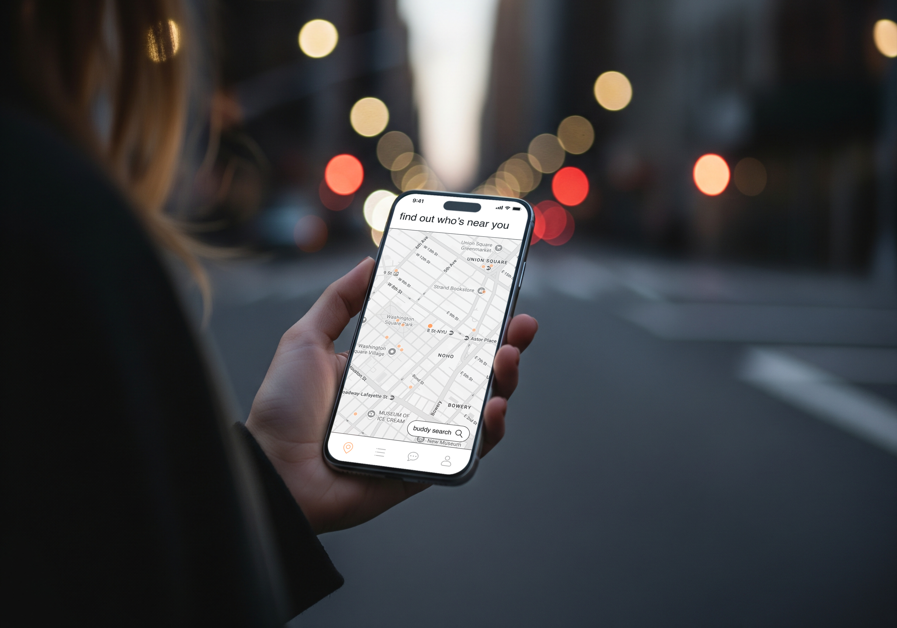
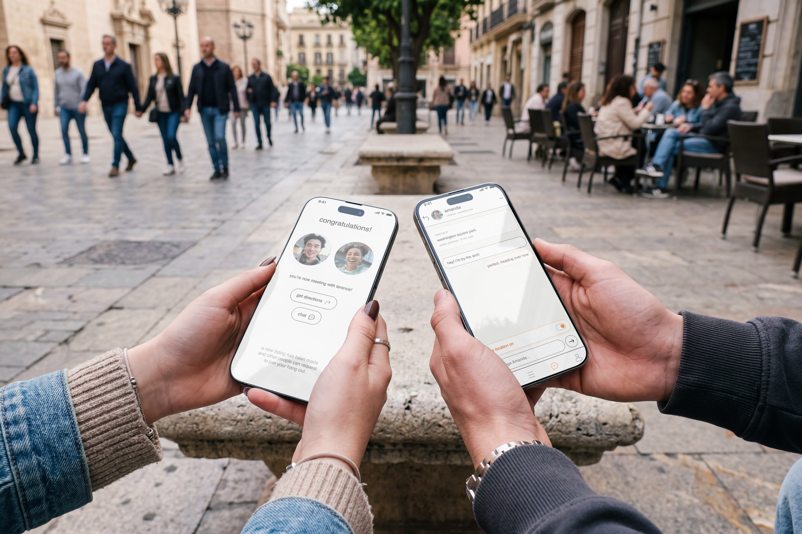
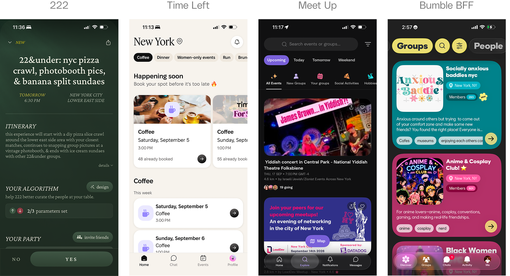
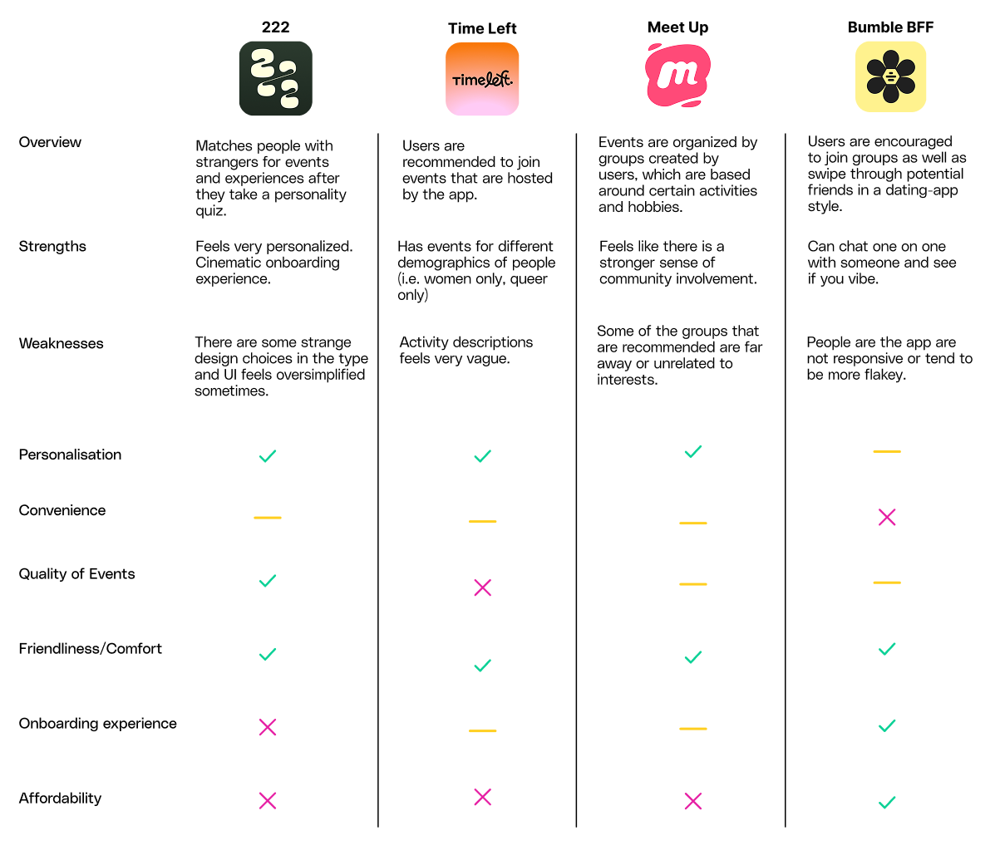
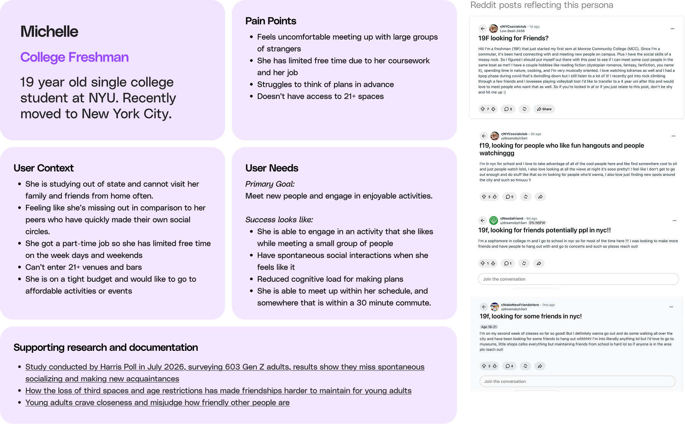
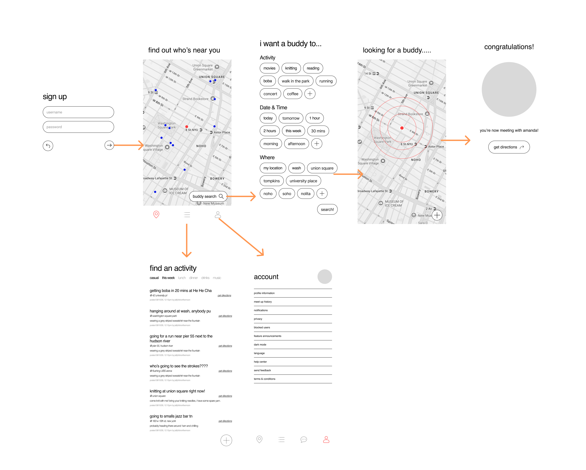

Problem
Young people are feeling increasingly isolated and lonely. These feelings are often further exacerbated by dense urban environments, in which people tend to disconnect themselves as a self-protective mechanism, and there is a lower sense of social cohesion and community.
According to the 2025 Cigna Group report “Loneliness in America”, 67% of Gen Z individuals reported being lonely, compared to around 65% of millennials and 60% of Gen X individuals.
In a 2014 study called “Mistakenly Seeking Solitude” conducted by Nicholas Epley and Juliana Schroeder at the University of Chicago, commuters on trains and buses were instructed to connect with a stranger near them, to remain disconnected, or to commute as normal. In both contexts, participants reported a more positive experience when they connected than when they did not.
People often misunderstand the consequences of distant social connections, and underestimate the interest of others’ in connecting.
Job To Be Done
Help young people in New York meet strangers and make new friends through different activities. The focus is on developing platonic relationships in small groups or one on one interactions.
Pain Points
Difficulty finding friends in close proximity
As young people live all over the city, it can be hard keeping in contact with people who live much farther away, as the long commute time increases the friction and challenges in finding a place to meet up.
Struggles in finding time to meet
Young people in the city can be juggling more than one job, or have unconventional schedules, which can lead to more difficulty finding appropriate times to meet up with others consistently.
Market Analysis
Each competitor focuses more on getting people to go to events with large groups of people at an event venue that might be far away from where they are, and often cost more money on top of the monthly membership fee. The events usually required reserving in advance, and tend to run out of available spots closer to the date. The onboarding experience for Time Left and Meet Up were average in length, but it was especially long and tedious for 222, although for 222 the long onboarding feels like an MBTI test that plays into the feeling of personalization. Time Left and Meet Up both felt like they targeted more working adults rather than college students, but 222 feels a bit more casual with a 22 and under event option.
The opportunity was in making meeting new people and making plans feel easy, accessible, and low-commitment.


User Persona
Getting to understand the needs of the users.

Wireframing
From my research, I identified the following features to address the pain points of the users.
Uber-Style User Matching
Users who are looking for a buddy to meet up with are matched together. Both users are available at the same time in the same area.
Activity Recommendations
Users should be able to select when and what they want instead of having to plan, reducing cognitive load.
Map View & Directions
Users should be able to see how many app users there are nearby as well as get immediate directions to the person they are meeting up with.

The wireframes helped me identify information dense areas of the app in where there could be lessened cognitive load to the user, such as the selection options page and the activity list page. After creating the wireframe, I also decided to change the sign up page to only be a phone number verification, so users have no need to create an official account with their email.
User Tests
With the initial prototype, I took the product to conduct some user testing.
The task was: You want to meet new people in the city, so you signed up for a meet up app that matches you with other people looking to hang out. Find someone to meet up with.
Users were generally able to navigate the app without difficulty, although they had feedback on some of the interface having a slightly romantic insinuations.